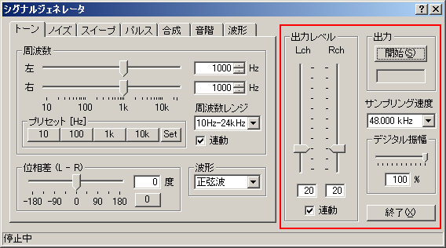

| 項目 | 説明 |
|---|---|
| 出力レベル | D/Aコンバータから出力された後の最終的な出力レベル（ボリューム）を調節します。[連動]チェックボックスをチェックすると L(左)とR右)が連動して同レベルで出力されます。これはWindowsの再生のボリュームと連動しています。 |
| 出力 |
[開始]ボタンで音の出力を開始します。実行中は、[停止]ボタンに変わり、クリックすると停止します。 ストップウォッチ機能があり、[開始]ボタン押下時より時間カウントを開始し、[開始]ボタンの下にあるスペースに表示されます。停止時までカウントされます。 |
| サンプリング速度 | サンプリングレートの選択では、パソコン内蔵のハードウェアを調べて、可能なサンプリングレートを選択できます。出力可能周波数はその1/2の周波数までとなります。 |
| デジタル振幅 | D/Aコンバータに入力するデジタル出力レベルを調節します。サウンドデバイスがピークで歪む場合、絞って歪まない範囲で使用することができます。 |
| 終了 | 「シグナルジェネレータ」を終了します。 |